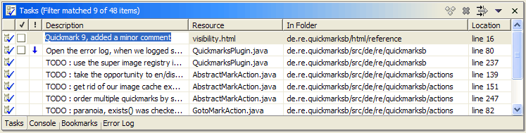

If you don't like to have Quickmarks in Task and/or Bookmarks view you
must edit the plugin.xml of this plugin.
Before you change the plugin.xml in any way be sure
to remove any and all Quickmarks set! If you don't, then
you'll receive error messages from the views you have disabled and
thei'll continue to show the old Quickmarks (not functional though).
And you can't get rid of both, errors and stale marks, at least not
easily!!!
Also better disable the Quickmarks feature before
changing the plugin.xml by: Help >> Software Updates >>
Manage Configuration ... Locate the "Quickmarks 1.x.x" in the tree
under "Eclipse Platform" and select it. On the right side click on
"Disable". When asked to restart Eclipse, choose no. Instead exit
Eclipse then and change the plugin.xml as
desired/described below.
After the change you must re-enable the feature by: again Help >> Software Updates >> Manage Configuration ... Then be sure to have the button "Show Disabled Features" activated, else you won't see the Quickmarks. Locate "Quickmarks 1.x.x" as above and click on it in the tree. On the right side click "Enable". When asked to restart Eclipse this time choose "OK". After the restart customize the perspectives again to enable the Quickmarks. If you have choosen to show the Quickmarks in any view, that has a filter (all three, Bookmarks, Problem and Task view have filter settings in Eclipse 3) then look at the filter settings and enable "Quickmark" to have them actually shown!
If you strictly follow this procedure the Quickmarks should work with the changed settings then and without any problem. Otherwise restart Eclipse 3 once more (Eclipse 3 seems to cache much more, than Eclipse 2.1 did, even invalid things)! But if you forgot to delete all existing Quickmarks, then best revert back to your previous configuration, then follow this procedure again carefully!
And there are 2 more things to note for Eclipse 3:
Having Quickmarks shown in any view in Eclipse 3 disables the display of the special Quickmarks icons (the decorated numbers). This is due to, hmmm, let's call it "not a really good" implementation of the internal MarkerImageProviderRegistry, but to most extent our fault, as we are using "internal API" (see Eclipse Bug 69894 for an enhancement request to make marker image providers public API and more details about the MarkerImageProviderRegistry, feel free to vote for this request :-).
If you prefer to have the special icons instead of a display in
one of the standard views, then change the Quickmarks super
type to "org.eclipse.core.resources.marker", as
described below!
We are sorry for the inconvenience for Eclipse 3 users, but most of these issues seem not to be our fault (except for the special images, because of our use of internal API). And this all has nothing to do with the Quickmarks beeing an Eclipse 2.1 feature run in compatibility mode on Eclipse 3: first implementations of a native Eclipse 3 Quickmarks feature reveal the very same issues!
Locate plugin.xml under
<ECLIPSE>/plugins/net.sourceforge.eclipsetools.quickmarks_1.x.x
and load it into any text editor. Find the extension
point="org.eclipse.core.resources.markers" subtag
<super>. As delivered there are two of them:
<super
type="org.eclipse.core.resources.problemmarker">
</super>
<super
type="org.eclipse.core.resources.bookmark">
</super>
You can remove one or the other or even change the type. Another usable
type you might want to try instead of the problemmarker is
"org.eclipse.core.resources.taskmarker".
This will turn the task view display of the Quickmarks:

Now the Quickmarks are shown similar to normal tasks: the description is easily editable and the mark deletable in the task view! You can check a Quickmark as beeing done/obsolete and then delete all obsolete ones in one action from the task views menu. Note however, that even while the Quickmarks look like normal tasks they remain to be Quickmarks, considered for automatic deletion by a Quickmark move or delete. Any message added to the Quickmark is silently lost. So don't edit important comments into your Quickmarks, add a real task or bookmark at that location instead!
Why isn't this done by default? It's just that similarity to real tasks with the potential loss of important messages and the fact, that clicking the description immediately takes one into editing mode instead of jumping to the mark in the first place.
To don't show the Quickmarks in any view, thus beeing only visible in
the side bars of editors (and have the special icons shown in Eclipse
3) choose only to have the super type
"org.eclipse.core.resources.marker".
If you don't want the Quickmarks to be persisted over Eclipse sessions
remove the <persistent> tag directly following the
<super> tags. Restart Eclipse to see your
changes.
See: